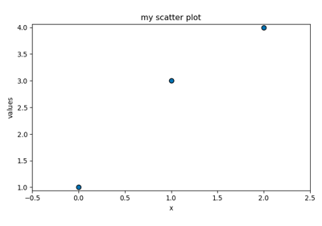

spectrochempy.Project¶
-
class
Project(*args, argnames=None, name=None, **meta)[source]¶ A manager for projects, datasets and scripts.
It can handle multiple datsets, sub-projects, and scripts in a main project.
- Parameters
*args (Series of objects, optional) – Argument type will be interpreted correctly if they are of type
NDDataset,Project, or other objects such asScript. This is optional, as they can be added later.argnames (list, optional) – If not None, this list gives the names associated to each objects passed as args. It MUST be the same length that the number of args, or an error wil be raised. If None, the internal name of each object will be used instead.
name (str, optional) – The name of the project. If the name is not provided, it will be generated automatically.
**meta (dict) – Any other attributes to described the project.
Examples
>>> myproj = scp.Project(name='project_1') >>> ds = scp.NDDataset([1., 2., 3.], name='dataset_1') >>> myproj.add_dataset(ds) >>> print(myproj) Project project_1: ⤷ dataset_1 (dataset)
Methods
add_datasetAdd datasets to the current project.
add_datasetsAdd datasets to the current project.
add_projectAdd one project to the current project.
add_projectsAdd one or a series of projects to the current project.
add_scriptAdd one script to the current project.
add_scriptsAdd one or a series of scripts to the current project.
copyMake an exact copy of the current project.
dumpSave the current object into compressed native spectrochempy format
implementsUtility to check if the current object implement
Project.loadopen a data from a ‘*.scp’ file.
remove_all_datasetRemove all dataset from the project.
remove_all_projectremove all projects from the current project.
remove_datasetRemove a dataset from the project.
remove_projectremove one project from the current project.
saveSave the current object in SpectroChemPy format.
save_asSave the current
NDDatasetin SpectroChemPy format (*.scp)Attributes
allitemslist - all items contained in this project
allnameslist - names of all objects contained in this project
datasetslist - datasets included in this project excluding those located in subprojects.
datasets_nameslist - names of all dataset included in this project.
directoryPathlibobject - current directory for this datasetfilenamePathlibobject - current filename for this dataset.idstr - Readonly object identifier.
metameta - metadata for the project
namestr - An user friendly name for the project.
parentproject - instance of the Project which is the parent (if any) of the current project.
projectslist - subprojects included in this project.
projects_nameslist - names of all subprojects included in this project.
scriptslist - scripts included in this project.
scripts_nameslist - names of all scripts included in this project.
suffixfilename suffix
Examples using spectrochempy.Project¶
